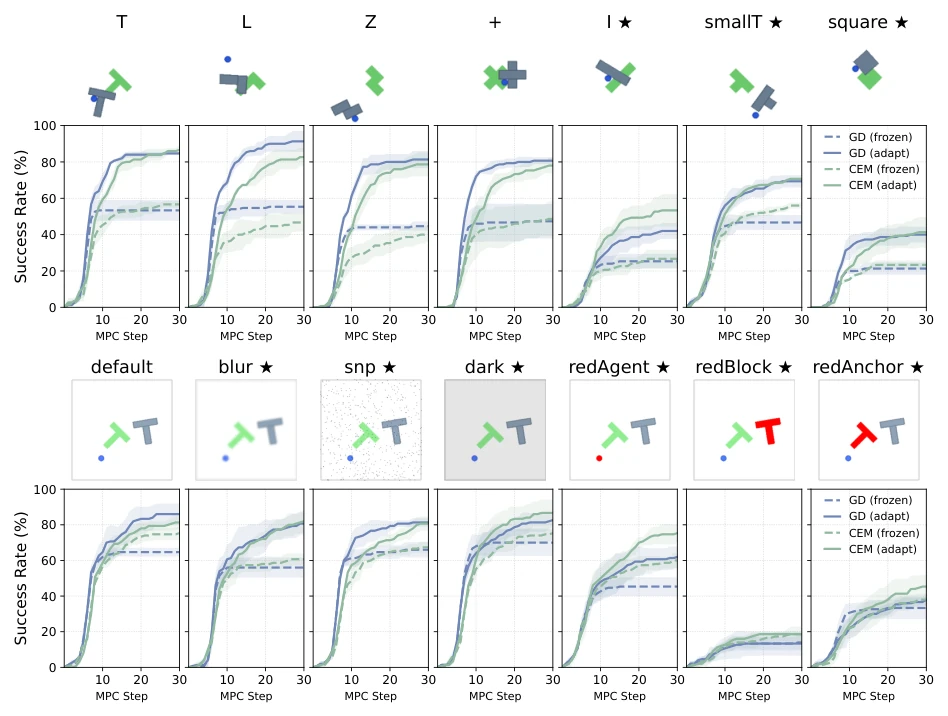
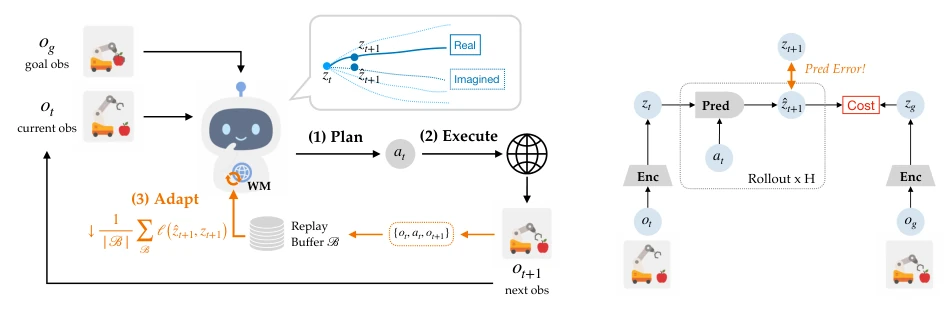
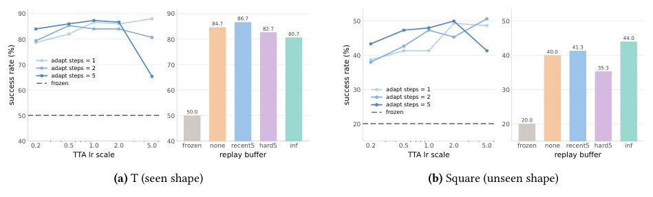
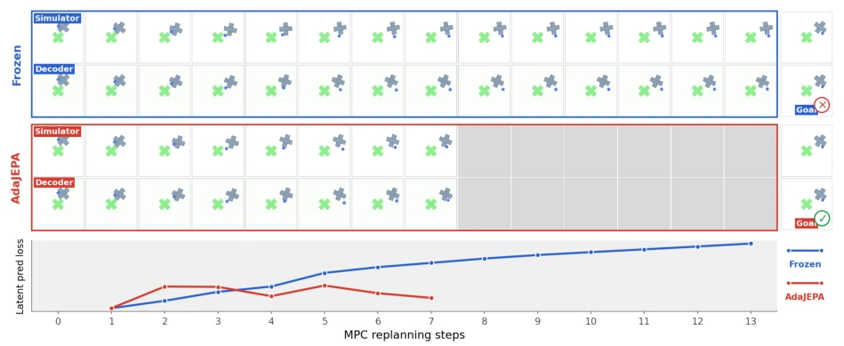
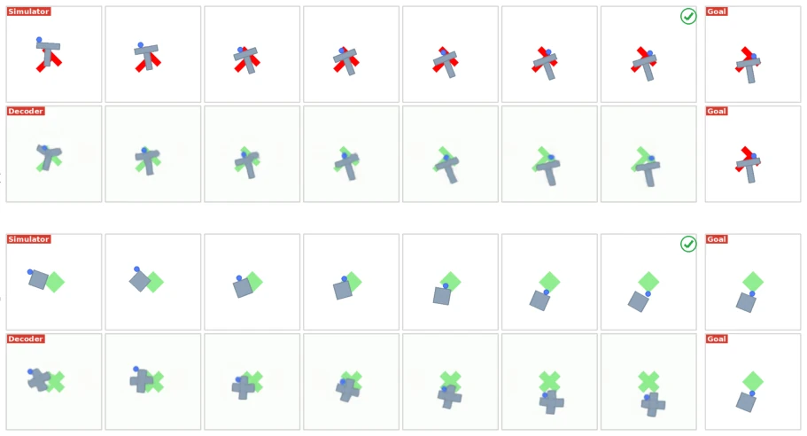
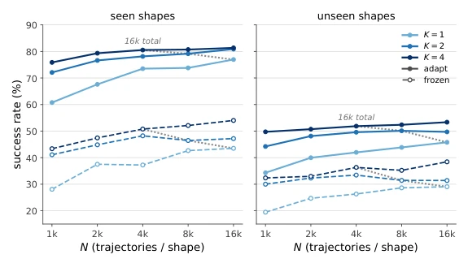
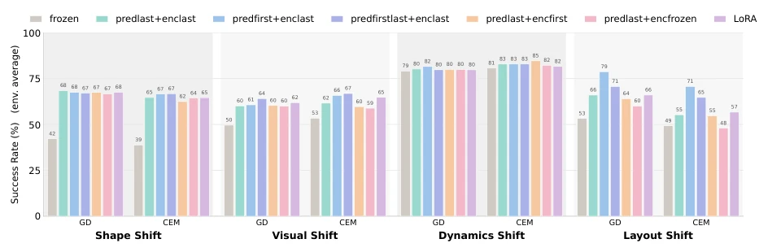
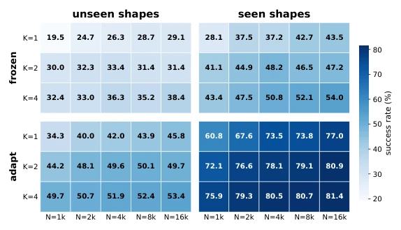
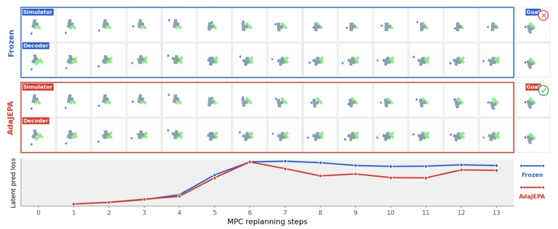
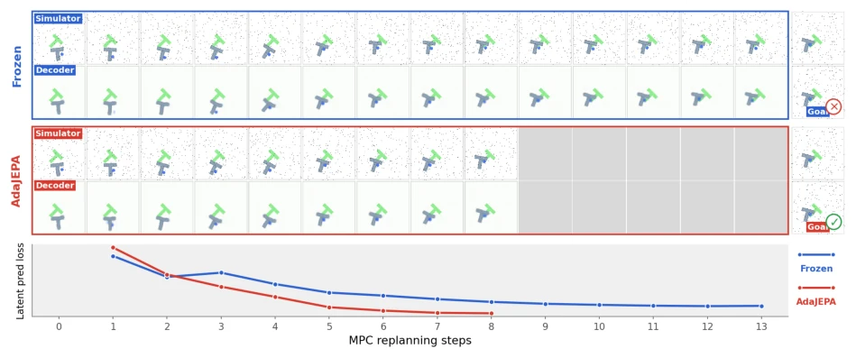

This paper makes a significant inroad into "frozen" world models. AdaJEPA implements a "learning while running" strategy within the MPC loop, capable of saving the situation under distribution shift with just one gradient update. Although led by LeCun, a prominent figure, the essence remains self-supervised prediction error minimization, without introducing new architectures. The advantage is its straightforwardness, the disadvantage is reliance on the coverage of pre-trained representations; if test environment features are completely unseen, fine-tuning alone cannot save it. Do not expect it to be as versatile as the human cerebellum, but under limited data it can indeed serve as a reliable "patch". However, it proves that Test-Time Adaptation (TTA) in embodied planning is not a gimmick, but a genuine performance improvement method, though do not expect it to solve all out-of-distribution problems, after all, the model's capability ceiling still depends on pre-training.
研究动机Motivation
现有 JEPA 类世界模型（LeCun, 2022; Zhou et al., 2025）在测试时通常冻结，一旦遇到视觉噪声、形状变化或动力学偏移（Toso et al., 2026），预测不准会导致 MPC 规划失败。小误差会累积，导致在真实环境部署困难。虽然有人尝试数据合成（Parthasarathy et al., 2025），但规划时仍冻结。本文旨在解决测试时分布偏移导致的性能下降，让模型在部署中持续校准，而非一成不变。这符合生物系统通过小脑机制适应输入变化的直觉，填补了世界模型在动态环境中缺乏在线适应能力的空白。
Existing JEPA-like world models (LeCun, 2022; Zhou et al., 2025) are typically frozen at test time, once encountering visual noise, shape changes, or dynamics shifts (Toso et al., 2026), inaccurate predictions lead to MPC planning failure. Small errors accumulate, leading to difficulties in deployment in real environments. Although some have attempted data synthesis (Parthasarathy et al., 2025), planning remains frozen. This paper aims to solve performance degradation caused by test-time distribution shifts, enabling the model to continuously calibrate during deployment, rather than remaining static. This aligns with the intuition of biological systems adapting to input changes via cerebellum mechanisms, filling the gap of lacking online adaptation capability in world models within dynamic environments.

Figure 2: Planning Success under Shape Shifts (top) and Visual Shifts (bottom). The ★denotes unseen shapes and configurations. AdaJEPA consistently improves planning success across all settings, using only a single adaptation step per MPC replanning step. We extend the maximum number of steps to 30 to show the increas- ing trend of planning success of AdaJEPA. Comparison between frozen and AdaJEPA planning trajectories is in Appendix C, showing AdaJEPA consistently decreases prediction loss and leads to better planning.
The core is a "Plan-Execute-Adapt-Replan" closed loop. 1. Pre-trained JEPA model (encoder + predictor). 2. Each MPC step: first plan actions using the current model, execute the first action block. 3. Collect newly observed state transitions o_t, a_t, o_t+1 and store into Buffer. 4. Compute self-supervised prediction loss L_ada based on Buffer, update only partial parameters (e.g., predictor last layer + encoder last layer), execute 1 step of gradient descent. 5. Immediately replan using the updated model. Buffer strategies include recent-N and hard-N. The key of this method lies in utilizing real feedback after execution as a self-supervised signal, requiring no additional annotations. Parameter updates are limited to a subset, ensuring computational efficiency. Through this lightweight adaptation, the model can dynamically calibrate latent space predictions, cope with distribution drift at test time, and achieve continuous optimization within the closed loop.

Figure 1: AdaJEPA performs test-time adaptation during closed-loop MPC. At each MPC step, we plan with the current model, execute the first action 𝑎𝑡, collect observation 𝑜𝑡+1 from the environment, and update the model to minimize the prediction error on the newly observed transition {𝑜𝑡, 𝑎𝑡, 𝑜𝑡+1} before replanning. This yields a simple plan–execute–adapt–replan loop that continually recalibrates the model to transitions encountered in the current environment.
Tested on PushT (shape/visual shift) and PointMaze (dynamics/layout shift). Baseline is frozen JEPA. Metric is success rate. Results show AdaJEPA significantly outperforms the frozen model under OOD, with success rate doubling under shape shift. Ablation indicates updating predictor last layer + encoder last layer yields the best effect. Data volume analysis shows adaptation advantage is largest in low data regime, even exceeding frozen model with 16x more training data. Latency increase is negligible (~0.03s). Visualization shows decoded trajectories are closer to real structure after adaptation. Proves the effectiveness of lightweight test-time adaptation in improving world model robustness.

Figure 9: Effect of Adaptation Hyperparameters and Replay Buffers to Planning Success Rates.

Figure 11: The model is trained on shape {T,L,+,Z}, and tested on a seen shape + here.
其他图片Other Figures

Figure 7: Examples of AdaJEPA Planning Trajectories under Visual Shifts and Shape Shifts. The decoder is trained on pretrained representations; i.e. (a) original PushT data with a gray pushed block; (b) PushObj data which only includes {T, L, Z, +} while square is an unseen shape.

Figure 6: Effect of training data scale on PushObj planning suc- cess: shape diversity 𝐾and trajectories per shape 𝑁.

Figure 8: Effect of Adaptation Layers to Planning Success Rates. The reported values are the per-shift success rates (%) averaged over all setups within each shift. Test-time adaptation improves planning across all distri- bution shifts and is largely insensitive to which layers are adapted.

Figure 10: Heatmap of offline training data scale vs. PushObj planning success. Rows vary shape diversity 𝐾and columns vary trajectories per shape 𝑁.

Figure 12: Shape Shifts: The model is trained on shapes {T, L, Z, +}, and tested on an unseen shape smallT. The decoder tries to decode to the closest seen shapes.

Figure 13: Visual Shifts: The model is trained on the default PushT data, but the test-time observations have salt-and-pepper noise. AdaJEPA consistently decreases prediction loss.